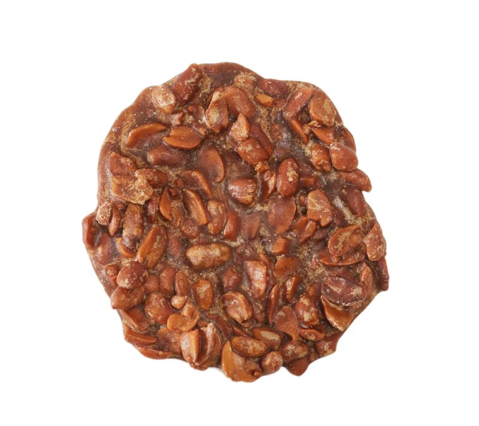

Tablet Pistach (Haitian Peanut Brittle)

Description
One of the most popular and common candy you will find is a Peanut Brittle (Tablet Pistach).
Ingredients
- 1/4 cup of Roasted Peanuts
- 3/4 cup of light brown sugar
- 1/2 tsp of Vanilla extract
- 2 tsp of cinnamon powder
- 1 tsp of grated nutmeg
- 1/2 tsp of Anise Star extract
- 1/4 cup of Water
- 1/2 tsp salt
- large nonstick sauce pan
- Parchment paper or Nonstick baking mat
Steps
- Add the water, sugar, vanilla extract, ginger,
cinnamon, nutmeg, salt, and anise star extract to
the sauce pan and bring to a boil.
- Add the peanuts and boil for 10-15 min or until mixture has thicken.
- Remove the pan from the heat and continue
to stir until the liquid has evaporated and the mixture is sticky.
- Using a spoon place 6 large cookie sized amounts on the parchment paper of nonstick backing mat.
- Place the pieces in a cookie jar when cool.
back to home